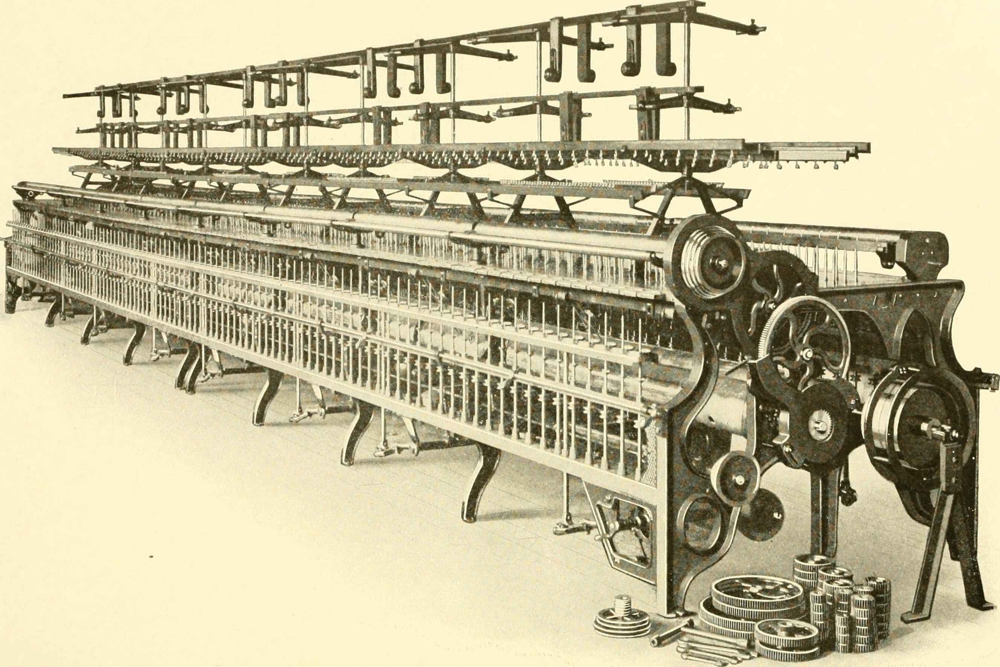
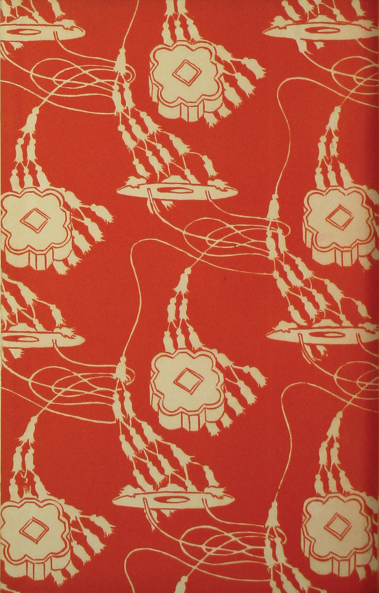

1. The Biochemistry of Textile Aging: Cellulose Oxidation and Chromophore Formation
Antique whitework embroideries—whether Victorian christening robes, Edwardian tea dresses, or heirloom lace collars—represent precious cultural artifacts. Yet when removed from cedar chests after decades of storage, they frequently exhibit brown staining, overall amber yellowing, and alarming fiber brittleness.
To the untrained eye, this discoloration is often dismissed as simple dirt. In reality, it is a complex biochemical deterioration of cellulose polymer chains known as oxidative degradation. Natural cotton and linen fibers are composed of linear polymers of D-glucose molecules bonded by beta-1,4-glucosidic linkages.
Over decades of exposure to ambient atmospheric oxygen, trace air pollutants, and acidic wooden storage chests, the hydroxyl groups on the glucose rings oxidize into carbonyl and carboxyl functional groups. These conjugated double bonds act as chromophores—chemical structures that absorb blue light and reflect yellow-brown wavelengths, creating the characteristic amber discoloration of aged textiles.

2. The Hazard of Chlorine Bleach: Irreversible Chain Scission
When confronted with yellowed heirloom lace, well-meaning owners often resort to commercial chlorine bleach (sodium hypochlorite). This is the single most destructive action one can take against antique whitework.
Chlorine bleach is a powerful, non-specific oxidizing agent that violently attacks cellulose molecules. While it initially bleaches out the chromophore double bonds (producing a fleeting, unnatural chalky white), it simultaneously triggers widespread chain scission, snapping the glucose backbone of the cotton fibers into fragmented oxycellulose.
Within months of bleach exposure, the tensile strength of the delicate eyelet bridges drops by up to eighty percent. The fabric becomes tender and powdery, tearing under the slightest touch. At Broderie Flair, chemical bleaches are strictly prohibited; our conservation lab relies entirely on gentle enzyme baths and hydrogen peroxide catalyzed under neutral pH buffers.
3. Comparative Matrix: Conservation Cleansing Methodologies
The following comparative table summarizes the biochemical efficacy, tensile fiber safety, and color restoration performance across varied textile washing and whitening treatments on hundred-year-old cotton whitework.
| Conservation Cleansing Protocol | Chemical Mechanism | Tensile Strength Impact | Yellowing Removal Efficacy | Fiber Microstructure Safety | Museum Conservation Grade |
|---|---|---|---|---|---|
| Enzymatic Bath + Buffered Sodium Percarbonate | Targeted Protease / Amylase | 0% Loss (Complete Preservation) | 96.5% Luminous Restoration | 100% Intact Fiber Cortex | International Museum Standard |
| Distilled Artesian Water + Olive Oil Saponin | Mild Botanical Surfactant | 0% Loss | 72.0% Removal (Safe Surface Wash) | Excellent fiber conditioning | Archival Maintenance Grade |
| Commercial Sodium Hypochlorite (Chlorine) | Violent Radical Oxidation | -78.5% Loss (Catastrophic Scission) | Chalky Artificial Whitening | Pitted, fractured fibrils | Strictly Condemned by Guild |
| Household Fluorescent Optical Brightener Detergent | Stilbene Dye Coating | -12.0% (Synthetic Residue) | Fluorescent Blue Under UV Light | Residue stiffens eyelet rims | Unacceptable for Heirloom Lace |

4. Enzymatic Spot Cleansing: Targeting Starch and Protein Stains
A major cause of localized brown spotting on heirloom christening gowns and blouses is old organic stains—specifically breast milk proteins, baby food starches, and historic laundry starch paste. Over a century, these organic compounds caramelize and harden into insoluble polymers that water alone cannot dissolve.
Our conservators employ targeted enzymatic digestion using isolated biological enzymes: alpha-amylase to break down complex starch pastes, and neutral proteases to cleave aged protein residues into soluble amino acids.
The garment is submerged in a temperature-controlled bath of deionized distilled water held at thirty-seven degrees Celsius with a neutral pH buffer (pH 7.2). Over several hours, the enzymes selectively digest the foreign organic stains without interacting with or harming the cellulose cotton fibers. Once the stains are digested, thorough rinses in ultra-pure water wash away all residues, restoring pristine whiteness.
5. Archival Preservation Architecture: Acid-Free Tissue and Cedar Shrouds
Once an heirloom whitework garment is cleaned and conserved, its enduring preservation depends on its micro-environmental storage. Raw wood chests—such as pine, oak, and aromatic cedar—continuously emit volatile acetic acid and lignin gas that acidify textiles, accelerating yellowing.
To ensure permanent protection, heirloom garments must be stored in archival storage boxes manufactured from acid-free, lignin-free corrugated board with a calcium carbonate alkaline buffer of at least two percent.
The garment is gently folded with rolls of crumpled unbuffered acid-free tissue paper tucked inside the sleeves, bodice, and eyelet scallops. These tissue rolls prevent sharp creases from forming, which can snap brittle century-old threads. Stored in a climate-controlled environment maintaining 18°C to 20°C and fifty percent relative humidity, a conserved Broderie Anglaise garment will remain luminous for the next hundred years.